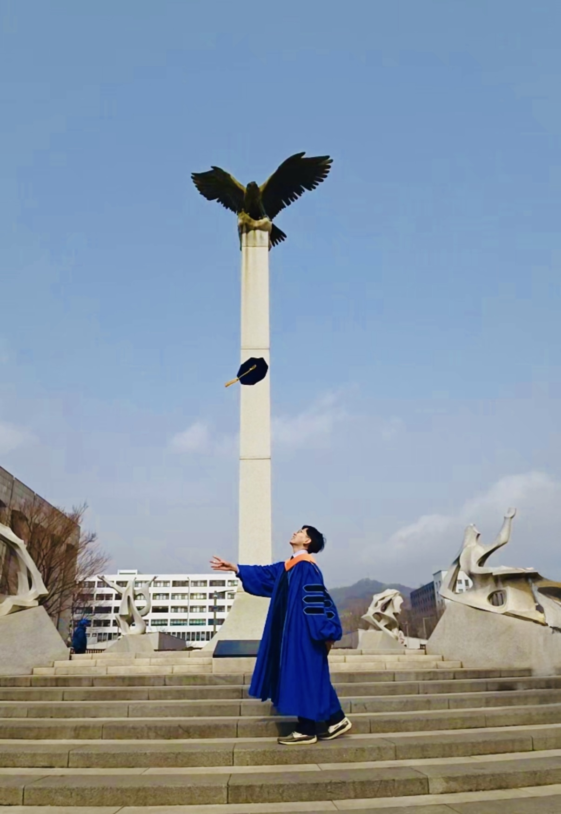

Seongjun Kim
Postdoctoral Scholar at Yonsei University

My research focuses on deep learning-based image enhancement for medical imaging, particularly artifact reduction and denoising in computed tomography (CT). I am interested in developing methods that improve image quality under challenging acquisition conditions.
I am a postdoctoral scholar at Yonsei University, where I received my Ph.D. in Integrated Technology in February 2026 under the supervision of Prof. Jongduk Baek. My doctoral thesis is titled Deep learning-based artifact reduction algorithms for low-dose CT images.
My work explores self-supervised learning with limited reference data, the reduction of metal and streak artifacts in sparse-view CT, and denoising across different dose and noise levels. I aim to extend these image enhancement methods to diverse imaging modalities and real-world applications.
Email: 2sjkim@gmail.com
Education
Yonsei University
Ph.D. in Integrated Technology
Advisor: Prof. Jongduk Baek
Yonsei University
B.S. in Integrated Technology
High Honors in Graduation · Ranked 1st in class